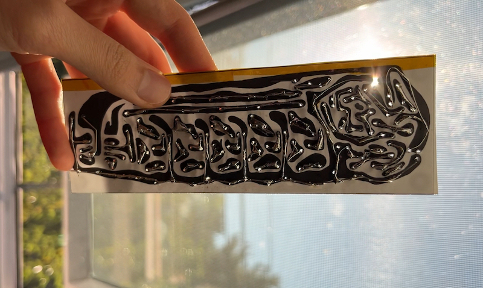
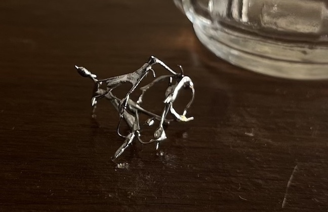
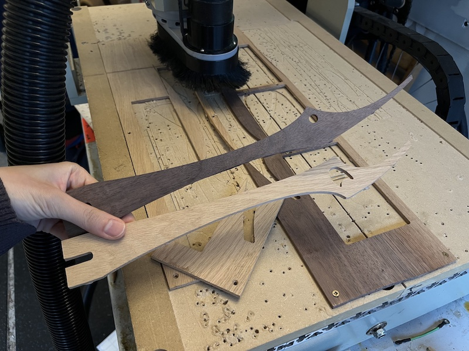
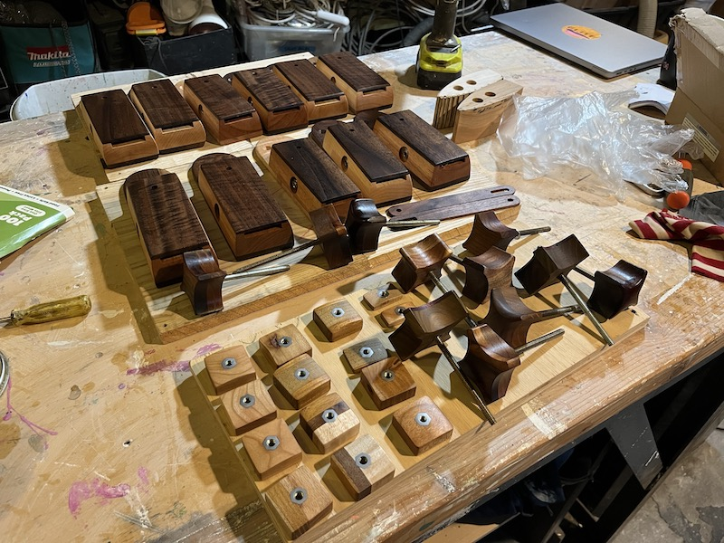
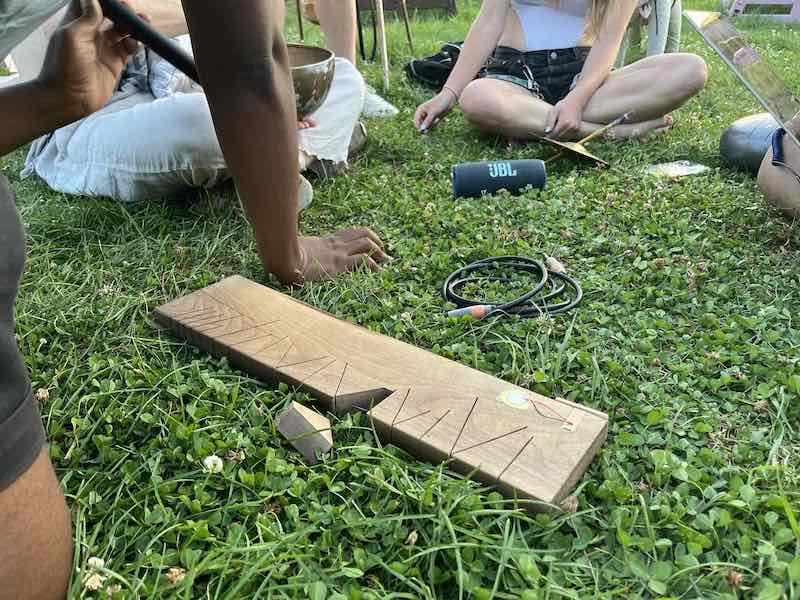
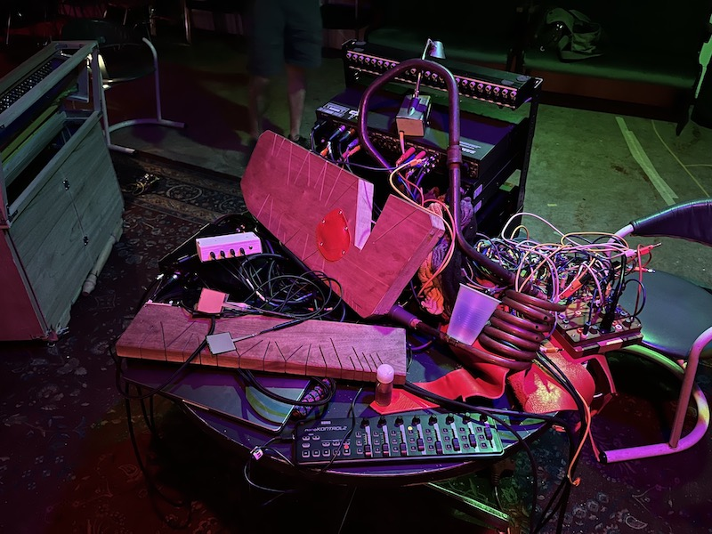
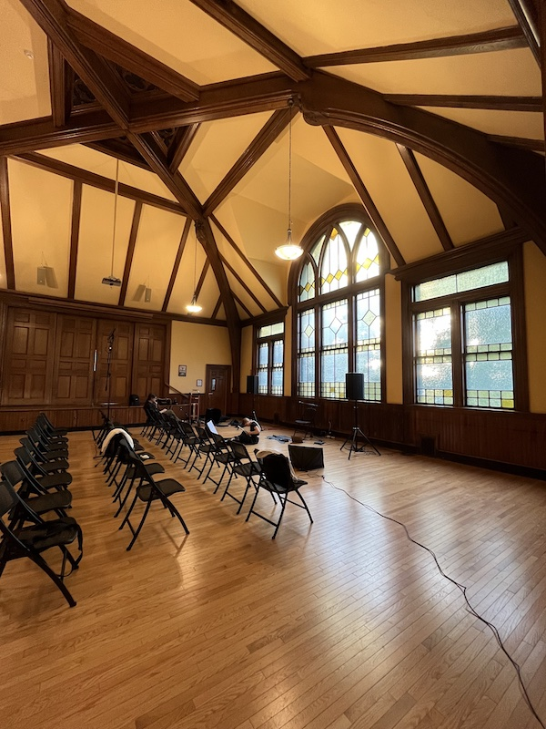
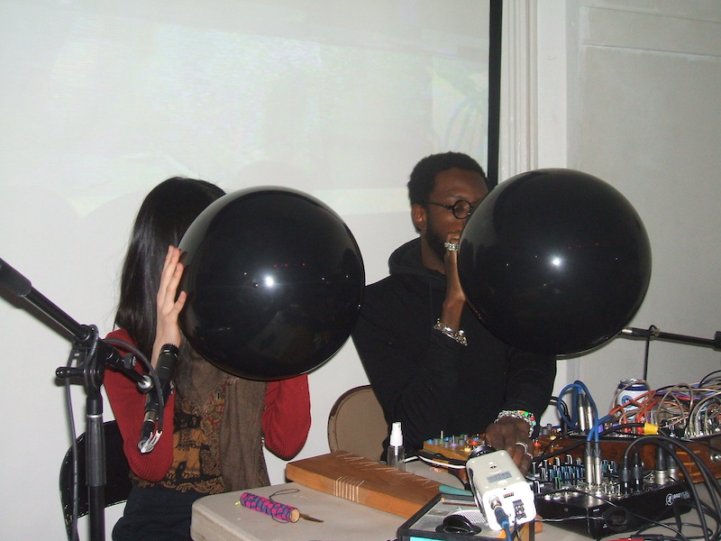

After reading Daniel’s dissertation, I realize instrument making is a way of erasing, gapping, carving, cutting, subtractive ways of thinking. The idea of cutting through the body for air to go through and resonate with both, speaks to my art practice of using breath that resonates with material inside the mouth and throughout the body. It also resonates with how I see myself as an Asian in noise music. I feel like I’m cutting through the land being a foreigner and finding voice and sound and community and medium that vibrate between me and the environment. Cutting the wood is to create the in-between spaces, is to add the possibility of vibration and resonance. Bringing the technology into nature is also to create the in-between spaces, to grow the computer inside soil, and to vibrate the tree and grass and water with electronic sound.
I have been working on solar sounder project since last month. Femi taught me how to do the paper circuit by Peter Blasser. This is the first time that I really feel soldering itself can be an art piece that holds messages and thoughts. It made me start to think of my relatiobship with all these electronics in a different ways. How do they wanna be? What kind of body they like? How much my SELF should be attached on it? And then I made a 2*2 cm mini sculpture out of solder wire cause I got bored.
 I was working with Daniel since the past few days, helping with sanding and oiling the dax, in exchange for having my own daxophone. It is also hanging out with Daniel that I know the word "creative capitalism". It's nice that artist found a way to wade and create path through this swamp of capitalism.
 today i hang out with friends at ponyhenge. we bring acoustic and batteryed instruments and jam. my arbrasson was broken when we're playing. i'm a lil sad but also happy for it because it died at this adorable place and were surrounded by these people i love so much during sunset. thank you for playing some amazing shows with me. i'm gonna make a new one soon.
Today I worked on my website and figured out how to load the nav bar dynamically. the whole thing is difficult than i thougt but really satisfied after i figured it out.
orea cookie therapy performed at the Lost Bag. me and femi loved our set. its the fresh one for both of us. femi's arbrasson was broken before the show. but we love our set so much.
Non-Event @ First Church in Jamaica Plain, May 16 2025. i have to say i am so lucky that my set at pity polar with femi was seen by Chris, so that i was invited to play a Non-Event series, and got the chance to meet Laura Cocks, who is the most amazing flutist i've ever heard. i can never forget that Laura said to me: we address our breath in different ways...balloon is like a geographical site that you give access to people to witness your struggle and vulnerability....and we both stopped talking because we're gonna cry. it was a beautiful night.
Residual Noise @ RISD SRST, April 5 2025. i played balloon with 29 channels ambisonic deme shpae speaker arrays at RISD's Studio for Research in Sound and Technology. the sound in the space, or the space shaped by the sound is so alive, all of the movement is right here. sometimes you can not ignore the power of good quality technology supported by academia that are sometime not align with the idea of diy community. i think it is nice to be in both group and be in the in-between.
orea cookie therapy performed at pity parlor. This show was the beginning. It was my first duo set with Femi, my first time performing in a noise venue in Boston. That night led to an invitation from Chris Strunk to play a Non-Event show. None of this would have happened without another balloon vibrating beside me, and without a space that brings people together (thank you Janet). Luck can’t explain everything—but I’m so lucky to have them around me. I also started learning to be confident and comfortable in noise and improvisation aer playing with Femi. Just being aware of each gesture and staying in flow with sound is already a kind of miracle.
